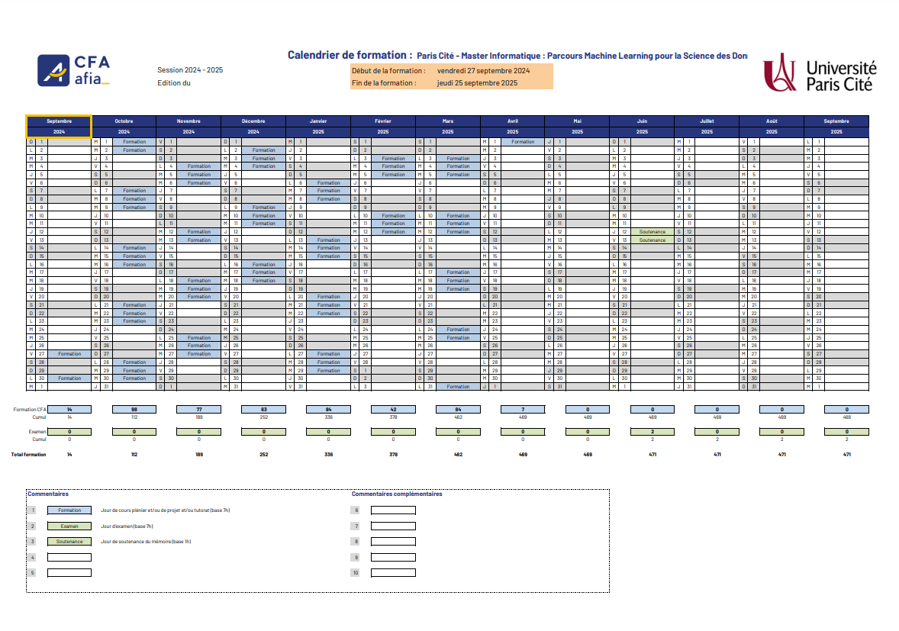

Si le calendrier ne s'affiche pas correctement, vous pouvez consulter l'emploi du temps mis à jour en cliquant ici.
Calendrier de formation MLSD & AMSD 2024 - 2025
Le calendrier de formation MLSD est également valable pour les étudiants en AMSD de l'année universitaire 2024 - 2025.
Présentation du Master
Master Informatique – Parcours : Machine Learning pour la Science des Données (MLSD)
Présentation
La plupart des décisions importantes des responsables en entreprise, mais aussi des scientifiques ou des économistes par exemple, sont prises aujourd’hui sur la base de l’analyse de données massives et multi-vues. Ces données sont au cœur du fonctionnement des intelligences artificielles actuelles. Si ces données sont disponibles en abondance (Big data), elles le sont le plus souvent sous forme brute et nécessitent d’abord une réorganisation et un prétraitement éclairés. Ensuite, une phase d’analyse, par des méthodes d’apprentissage machine (Machine Learning) issues de l’intelligence artificielle et de la statistique, est donc nécessaire. C’est l’objet du Master en alternance « Machine Learning pour la Science des Données ». Ce master requière des compétences en Informatique et en mathématiques appliquées. Dans M1, des UE spécifiques aux domaines de l’apprentissage machine, la science des données, le Big data et de l’intelligence artificielle sont proposées. Ce master existe également en formation initiale (FI) sous le nom « Apprentissage Machine pour la Science des Données ».
Objectifs
Ce master en alternance a pour objectifs de :
- Former des Data Scientists maitrisant les différentes méthodes d’apprentissage machine (supervisé, non supervisée et semi-supervisé sous différentes approches y compris le deep learning) et capables de concevoir de nouvelles méthodes adaptées aux divers domaines d’activités dans le but d’extraire de la connaissance utile à l’optimisation des offres et services de l’entreprise.
- Permettre également de poursuivre en thèse dans le domaine de l’apprentissage machine, l’intelligence artificielle et la science des données sur des sujets d’ordre théorique et appliqué à divers domaines dont le text-mining, le NLP, la recommandation et le Computer vision.
Compétences visées
Le Master prépare aux métiers liés au domaine du Machine Learning, l’intelligence artificielle et la science des données. Il permet d’acquérir de nombreuses compétences dans :
- les méthodes de machine learning sous différentes approches y compris le deep learning
- la statistique et l’algèbre linéaire dans le domaine de la science des données
- les données temporelles et spatiales
- le data engineering, la programmation notamment avec R et Python
- la gestion des données non structurées
- le Big data et les outils du cloud
- le Business intelligence et les outils analytiques
- Text-mining et NLP
- divers domaines d’applications dont le computer vision, les systèmes de recommandation, les réseaux sociaux et la bioinformatique.
Et après
Poursuite d’études
Avec le master MLSD, vous pouvez ensuite si vous le souhaitez poursuivre vos études en doctorat et réaliser ainsi une thèse en contrat doctoral ou CIFRE en partenariat avec une entreprise ; ce qui correspond à une sorte d’alternance en doctorat.
Passerelle
À l’issue de la première année, une réorientation en seconde année vers un autre parcours du Master Informatique est envisageable à l’appréciation du responsable du parcours concerné.
Taux de réussite
90% en M1, 98% en M2 (FI), 100% (FA)
Insertion professionnelle
Avec ce master et en tant que data scientist vous pouvez intégrer petites, moyennes et grandes entreprises dans divers secteurs. Voici une liste de métiers auxquels vous pouvez aussi prétendre : Data Engineer, Data Analyst, Architecte et Développeur d’outils d’analyse de données, Concepteur/Développeur de modèles mathématiques/statistiques, Ingénieur Recherche & Développement.
Contacts
Responsable du diplôme et du M2
Mohamed Nadif
mohamed.nadif@u-paris.fr
Responsable du Master 1
Lazhar Labiod
lazhar.labiod@u-paris.fr
Coordinatrice pédagogique
Séverine Affeldt
severine.affeldt@u-paris.fr
Responsable de pôle alternance
Karima Doukkali
kdoukkali@cfa-afia.fr
Site Afia CFA
Secrétariat pédagogique et scolarité
Aline Dodeman
aline.dodeman@u-paris.fr
Gestionnaire des conventions de stage
Eddy Malrat
eddy.malrat@u-paris.fr
En bref
Composante(s)
UFR des Sciences fondamentales et biomédicales
Niveau d’études visé
BAC +5
Durée
2 ans
ECTS
120
Modalités de formation
Formation initiale
Formation continue
Formation en alternance
Validation des Acquis de l’Expérience
Oui
Langue des enseignements
Français
Lieu de formation
Campus Saint Germain des Prés
Plus de détails sur le site officiel de l'Université Paris Cité :
https://biomedicale.u-paris.fr/master-informatique/master-informatique-mlsd/
Master Informatique – Parcours : Apprentissage Machine pour la Science des Données (AMSD)
Présentation
La plupart des décisions importantes des responsables en entreprise, mais aussi des scientifiques ou des économistes par exemple, sont prises aujourd’hui sur la base de l’analyse de données massives et multi-vues. Ces données sont au cœur du fonctionnement des intelligences artificielles actuelles. Si ces données sont disponibles en abondance (Big data), elles le sont le plus souvent sous forme brute et nécessitent d’abord une réorganisation et un prétraitement éclairés. Ensuite, une phase d’analyse, par des méthodes d’apprentissage machine (Machine Learning) issues de l’intelligence artificielle et de la statistique, est donc nécessaire. C’est l’objet du Master « Apprentissage Machine pour la Science des Données ». Ce master requière des compétences en Informatique et en mathématiques appliquées. Dans M1, des UE spécifiques aux domaines de l’apprentissage machine, de l’intelligence artificielle, de la science des données et le Big data sont proposées. À noter que ce master existe également en alternance (FA) sous le nom « Machine Learning pour la Science des Données ».
Objectifs
Ce master a pour objectifs de :
- Former des Data Scientists maitrisant les différentes méthodes d’apprentissage machine (supervisé, non supervisée et semi-supervisé sous différentes approches y compris le deep learning) et capables de concevoir de nouvelles méthodes adaptées aux divers domaines d’activités dans le but d’extraire de la connaissance utile à l’optimisation des offres et services de l’entreprise.
- Permettre de poursuivre en thèse dans le domaine de l’apprentissage machine, l’intelligence artificielle et la science des données sur des sujets d’ordre théorique et appliqué à divers domaines dont le text-mining, le NLP et le Computer vision.
Compétences visées
Le Master prépare à la fois à la recherche et aux métiers liés au domaine du Machine Learning, l’intelligence artificielle et la science des données. Il permet d’acquérir de nombreuses compétences dans :
- les méthodes de machine learning sous différentes approches y compris le deep learning
- la statistique et l’algèbre linéaire dans le domaine de la science des données
- les données temporelles et spatiales
- le data engineering, la programmation notamment avec R et Python
- la gestion des données non structurées
- le Big data et les outils du cloud
- le Business intelligence et les outils analytiques
- Text-mining et NLP
- divers domaines d’applications dont le computer vision, les systèmes de recommandation, les réseaux sociaux et la bioinformatique.
Stage
Stage : Obligatoire
Durée du stage : 4 à 6 mois
Stages et projets tutorés :
La formation requiert la réalisation d’un projet tutoré en première année. Le projet tutoré est programmé en second semestre. Plusieurs sujets sont proposés et s’articulent autour de l’apprentissage machine, l’intelligence artificielle et la science des données.
Le stage en première année est optionnel mais vivement recommandé.
Par contre, en M2, un stage de 4 à 6 mois est obligatoire dans une entreprise ou un laboratoire de recherche en France ou à l’international. La soutenance est programmée en septembre.
Et après
Passerelle et réorientation
À l’issue de la première année, une réorientation en seconde année vers un autre parcours du Master Informatique est envisageable à l’appréciation du responsable du parcours concerné.
Taux de réussite
90% en M1, 98% en M2 (FI), 100% (FA)
Insertion professionnelle
Avec ce master et en tant que data scientist vous pouvez intégrer petites, moyennes et grandes entreprises dans divers secteurs. Voici une liste de métiers auxquels vous pouvez aussi prétendre : Data Engineer, Data Analyst, Architecte et Développeur d’outils d’analyse de données, Concepteur/Développeur de modèles mathématiques/statistiques, Ingénieur Recherche & Développement.
Contacts
Responsable du diplôme et du M2
Mohamed Nadif
mohamed.nadif@u-paris.fr
Responsable du Master 1
Lazhar Labiod
lazhar.labiod@u-paris.fr
Coordinatrice pédagogique
Séverine Affeldt
severine.affeldt@u-paris.fr
Responsable de pôle alternance
Karima Doukkali
kdoukkali@cfa-afia.fr
Site Afia CFA
Responsable administratif et pédagogique
Aline Dodeman
aline.dodeman@u-paris.fr
Gestionnaire des conventions de stage
Eddy Malrat
eddy.malrat@u-paris.fr
En bref
Composante(s)
UFR des Sciences fondamentales et biomédicales
Niveau d’études visé
BAC +5
Durée
2 ans
ECTS
120
Modalités de formation
Formation initiale
Formation continue
Formation en alternance
Validation des Acquis de l’Expérience
Oui
Langue des enseignements
Français
Lieu de formation
Campus Saint Germain des Prés
Plus de détails sur le site officiel de l'Université Paris Cité :
https://biomedicale.u-paris.fr/master-informatique/master-informatique-amsd/
Termes statistiques essentiels
Variance : Mesure de la dispersion des données autour de la moyenne. Plus la variance est grande, plus les données sont dispersées.
Biais (Bias) : Différence entre la valeur attendue d'un estimateur et la vraie valeur d'un paramètre. Un modèle biaisé peut manquer de précision.
Écart-type (Standard Deviation) : Racine carrée de la variance. Il exprime la dispersion des données par rapport à la moyenne dans la même unité que les données.
Quartiles : Valeurs qui divisent un ensemble de données en quatre parties égales. Le premier quartile (Q1), la médiane (Q2), et le troisième quartile (Q3).
Loi de Bernoulli : Loi de probabilité qui décrit une expérience aléatoire ayant deux issues possibles (succès ou échec), avec une probabilité fixe de succès.
Loi binomiale : Généralisation de la loi de Bernoulli pour plusieurs essais indépendants. Elle modélise le nombre de succès dans un nombre d'essais donnés.
Loi normale (Gaussian Distribution) : Distribution de probabilité symétrique en forme de cloche, caractérisée par la moyenne et l'écart-type. Très utilisée pour modéliser des phénomènes naturels.
Loi de Poisson : Distribution de probabilité qui modélise le nombre d'événements se produisant dans un intervalle de temps ou d'espace, sous certaines conditions.
Espérance mathématique (Expected Value) : Moyenne pondérée des résultats d'une variable aléatoire. C'est la valeur centrale attendue d'une expérience aléatoire.
P-value : Probabilité de rejeter l'hypothèse nulle alors qu'elle est vraie. Utilisée dans les tests d'hypothèses pour évaluer la significativité statistique.
Intervalle de confiance (Confidence Interval) : Plage de valeurs qui, avec une certaine probabilité, contient la vraie valeur d'un paramètre statistique.
Régression linéaire : Technique statistique utilisée pour modéliser la relation entre une variable dépendante et une ou plusieurs variables indépendantes.
Surapprentissage (Overfitting) : Situation où un modèle est trop ajusté aux données d'entraînement, ce qui nuit à sa généralisation sur des données nouvelles.
Sous-apprentissage (Underfitting) : Modèle trop simple pour capturer les relations sous-jacentes dans les données, conduisant à une mauvaise performance.
Matrice de confusion : Tableau utilisé pour évaluer la performance d'un modèle de classification en comptant les vraies et fausses prédictions.
Test d'hypothèse : Méthode statistique pour tester une affirmation sur un paramètre de population en utilisant les données d'un échantillon.
Bootstrap : Technique de rééchantillonnage qui permet d'estimer les propriétés d'un estimateur en rééchantillonnant avec remplacement.
AIC/BIC : Critères utilisés pour comparer différents modèles statistiques et choisir le meilleur modèle en fonction de sa qualité ajustée.
Analyse en composantes principales (ACP) : Méthode de réduction de dimensionnalité qui transforme des variables corrélées en nouvelles variables non corrélées tout en conservant l'essentiel de la variance.
Matrice : Un tableau de nombres disposés en lignes et en colonnes, utilisé pour organiser des ensembles de données et des transformations linéaires.
Covariance : Mesure de la manière dont deux variables varient ensemble. Si la covariance est positive, les deux variables augmentent ensemble, si elle est négative, elles varient en sens inverse.
Matrice de covariance : Matrice carrée qui présente les covariances entre chaque paire de variables dans un ensemble de données.
Vecteur : Une liste ordonnée de nombres qui représente une quantité ayant une direction et une magnitude. Les vecteurs sont utilisés dans des espaces de haute dimension.
Autovalues (Valeurs propres) : Les scalaires associés aux vecteurs propres d'une matrice. Utilisées pour comprendre des caractéristiques fondamentales des transformations linéaires.
Autovecteurs (Vecteurs propres) : Les vecteurs associés aux valeurs propres qui ne changent pas de direction lors de la transformation par une matrice.
Régularisation : Technique utilisée pour ajouter une pénalité aux modèles statistiques afin d’éviter le surapprentissage.
Régression Ridge : Forme de régression linéaire qui inclut une régularisation L2 pour pénaliser les grands coefficients afin de réduire le surapprentissage.
Régression Lasso : Forme de régression linéaire qui inclut une régularisation L1 pour favoriser la parcimonie en forçant certains coefficients à zéro.
Gradient Descent : Algorithme d'optimisation utilisé pour minimiser la fonction de coût dans les modèles d’apprentissage machine.
Matrice de corrélation : Une matrice qui montre la corrélation entre chaque paire de variables. Utile pour repérer les relations linéaires entre les variables.
Loi des grands nombres : Théorème indiquant que, à mesure que le nombre d'échantillons augmente, la moyenne d’un échantillon approche la moyenne théorique de la population.
Théorème central limite : Théorème stipulant que la somme ou la moyenne de variables aléatoires indépendantes tend vers une distribution normale à mesure que la taille de l’échantillon augmente.
Maximum de vraisemblance (MLE) : Méthode d’estimation des paramètres d’un modèle statistique en maximisant une fonction de vraisemblance.
Algorithme K-means : Algorithme de clustering non supervisé qui partitionne les données en k groupes en minimisant la distance intra-cluster.
Réseaux bayésiens : Structures de données en forme de graphe qui représentent les relations probabilistes entre des variables.
K-Nearest Neighbors (K-NN) : Algorithme utilisé pour la classification basé sur la similarité des points voisins dans l'espace des données.
Distance euclidienne : Mesure de la distance directe entre deux points dans un espace multi-dimensionnel. Utilisée dans les algorithmes de clustering.
Normalisation et standardisation : Techniques de prétraitement des données qui ramènent les données dans un intervalle fixe ou une distribution normalisée.
Test de Chi-carré : Test statistique utilisé pour déterminer si une relation existe entre deux variables catégorielles.
Méthode des moindres carrés : Méthode utilisée pour ajuster un modèle de régression en minimisant la somme des carrés des différences entre les valeurs observées et prédites.
Variance expliquée : Proportion de la variance totale d'un ensemble de données qui est expliquée par un modèle statistique.
Effet de levier (Leverage) : Mesure de l'influence d'un point de données sur la régression.
Information Entropy (Entropie) : Mesure de l'incertitude ou de la quantité d'information contenue dans une variable aléatoire.
Mutual Information : Mesure de la dépendance entre deux variables, quantifiant combien connaître la valeur d'une variable réduit l'incertitude de l'autre.
Cross-validation : Technique utilisée pour évaluer la performance d’un modèle en le testant sur plusieurs sous-ensembles des données.
Random Forest : Algorithme basé sur la création de multiples arbres de décision pour améliorer la précision et réduire le risque de surapprentissage.
Réseaux de neurones convolutifs (CNN) : Type de réseau de neurones spécialisé dans le traitement des données structurées en grille, comme les images.
Réseaux de neurones récurrents (RNN) : Type de réseau de neurones adapté aux séquences de données, où les informations des étapes précédentes influencent les prédictions actuelles.
Courbe ROC (Receiver Operating Characteristic) : Courbe utilisée pour évaluer les performances d'un modèle de classification en traçant le taux de vrais positifs contre le taux de faux positifs.
AUC (Area Under the Curve) : Surface sous la courbe ROC, utilisée comme une mesure de performance globale d’un modèle de classification.
Plan du bâtiment principal